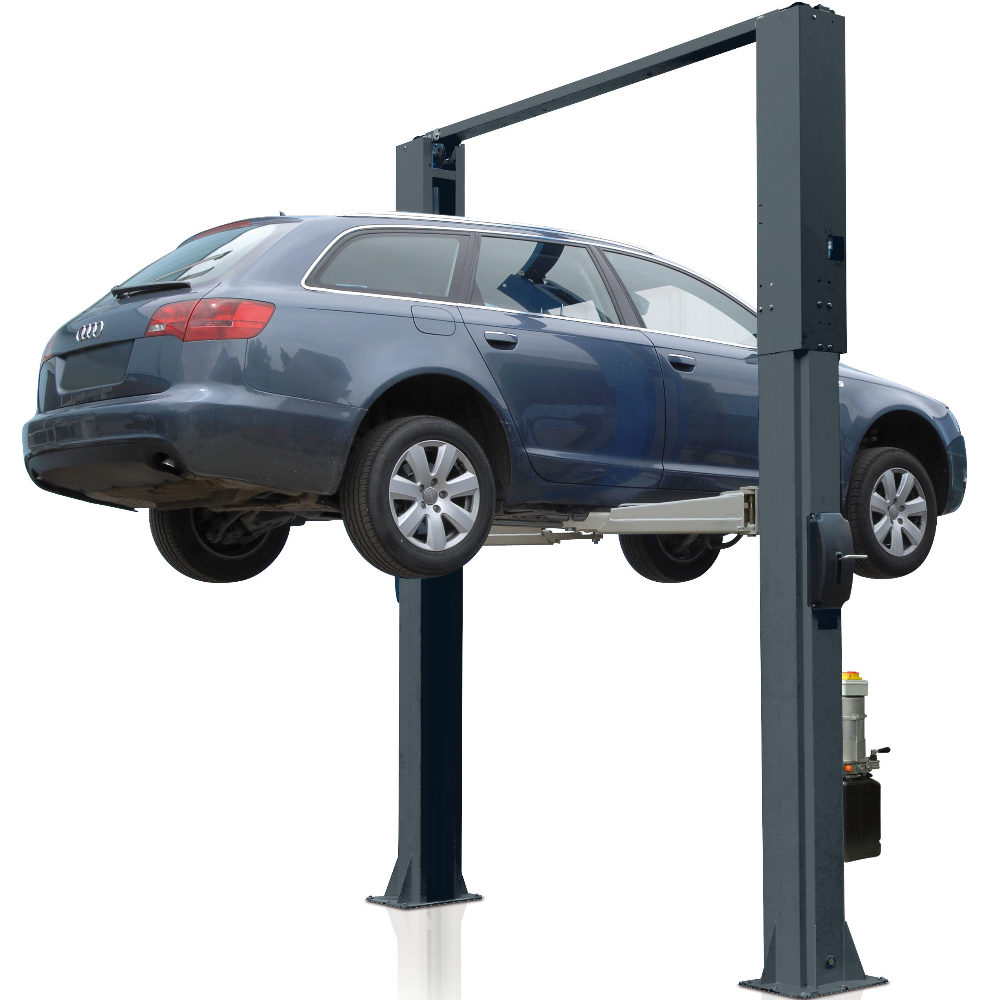

Есть вопросы? Закажите звонок и мы вам перезвоним!
Почему мы?
Мы являемся одними из ведущих авторемонтных мастерских, обслуживающих клиентов в Запорожье.
Главным преимуществом СТО Лобачев является наличие самого обширного спектора услуг в городе, что позволяет нашим клиентам устранить любую проблему в автомобиле. Все предоставляемые нами услуги выполняются высококвалифицированными механиками..
20000
Довольных клиентов
15
Лет на рынке
10
Видов услуг
15
Специалистов
7
дней в неделю бесплатных консультаций
Наши преимущества
Высококвалифицированные специалисты
Мастера высокого уровня подготовки с большим стажем работы.
Современное оборудование
Мы используем только самое новейшее оборудование для качественного обслуживания.
Самые честные цены
Цены услуг без завышения, а так же честный расчёт стоимости.
Гарантия
На все работы и комплектующие предоставляется гарантия.
Техподдержка
Звонки по любым вопросам 7 дней в неделю.
Работа в срок
Все ремонтные работы авто выполняются в оговоренные сроки.
Марки автомобилей

СТО Лобачев обеспечивает высококачественное техническое обслуживание для всех типов транспортных средств.
Мы сертифицированы для обслуживания и ремонта абсолютно всех марок автомобилей любого года выпуска.
Наши сотрудники - профессионалы своего дела, квалифицированные специалисты, которые могут справиться с любой проблемой, возникшей как с иностранным, так и отечественным автомобилем.
Запишитесь на прием
Остались вопросы?
Позвоните нам или закажите обратный звонок и мы сами Вам перезвоним
Подбор запчастей по VIN-коду
Наш автосервис осуществляет подбор запчастей по VIN-коду вашего автомобиля.
VIN - уникальный код транспортного средства, всегда 17 символов. Указан в техническом паспорте автомобиля.
Для подбора необходимых запчастей для Вашего автомобиля, позвоните по нашим номерам и сообщите VIN-код и наш менеджер подберет нужные вам детали.
Новостной блог
Открыты вакансии:
Автослесарь / механик
Требования:
Опыт работы по ремонту автомобилей от 3-х лет;
Среднее профессиональное образование;
Опыт работы с брендами BMW, Mercedes, Vag-групп как преимущество;
Навык применения нестандартных методов при ремонте автомобилей.
Описание вакансии:
Планово-предупредительное и сезонное обслуживание автомобилей (мультибренд);
Диагностика и ремонт ходовой части автомобиля‚ двигателя КПП;
Идентификация причины возникновения неисправности;
Обеспечение правильного хранения, использования инструмента, специнструмента, другого оборудования и материальных средств;